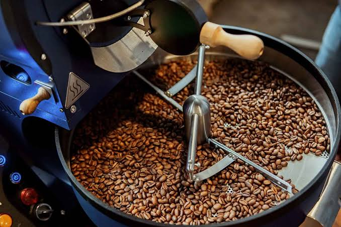
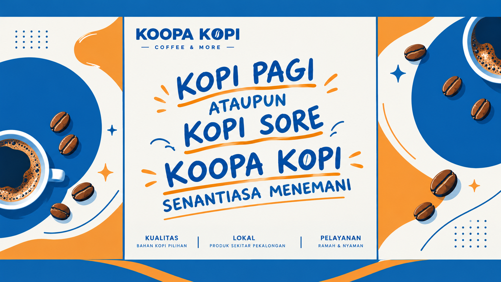
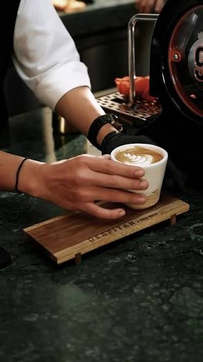
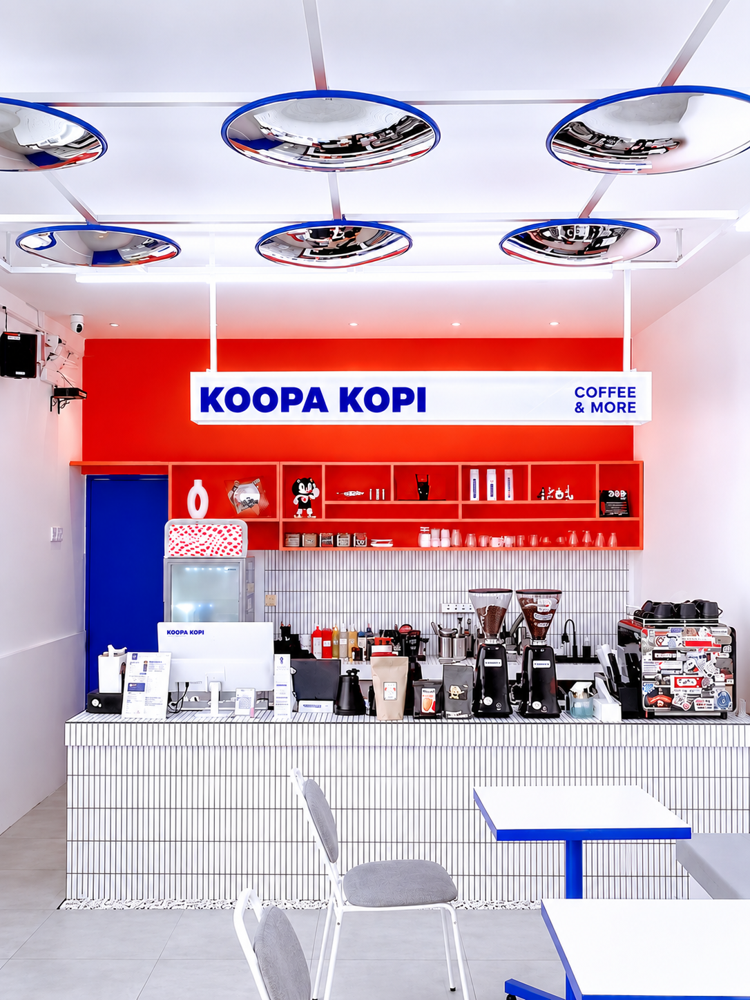
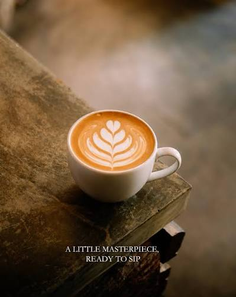
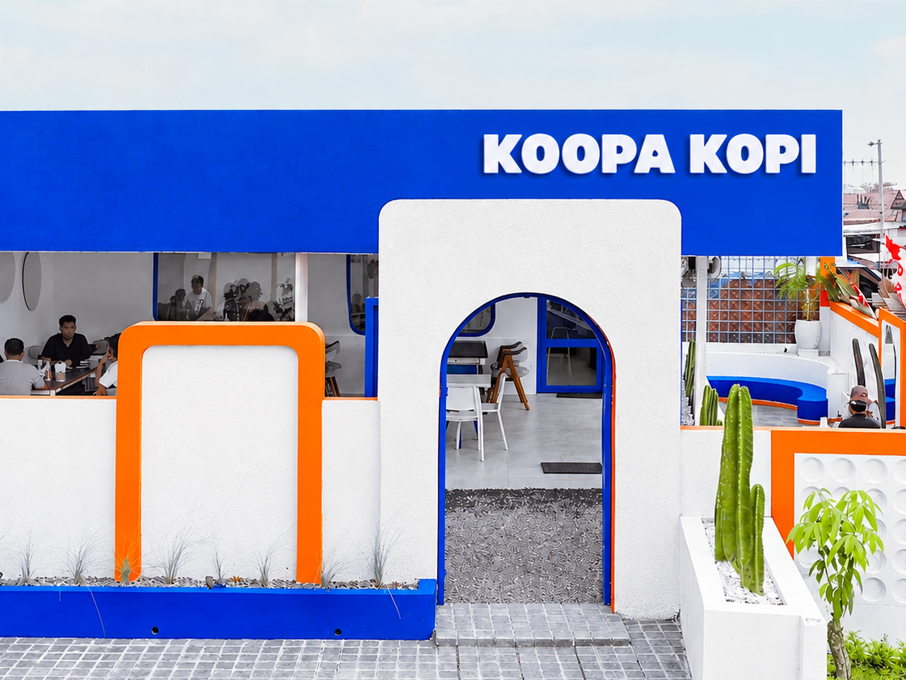

Proses Roasting
Biji kopi pilihan kami disangrai dengan teknik terbaik untuk menjaga aroma dan rasa.

Dokumentasi proses, suasana, dan aktivitas di Koopa Kopi.

Biji kopi pilihan kami disangrai dengan teknik terbaik untuk menjaga aroma dan rasa.

Air panas dituangkan perlahan untuk menghasilkan cita rasa yang seimbang.

Tempat yang nyaman untuk menikmati kopi, sendiri maupun bersama.

Setiap cangkir dibuat dengan ketelitian dan penuh makna.

Koopa Kopi hadir sebagai tempat untuk berbagi cerita dan rasa.
Lagu ini akan dibuka ketika opening dan closing kedai.